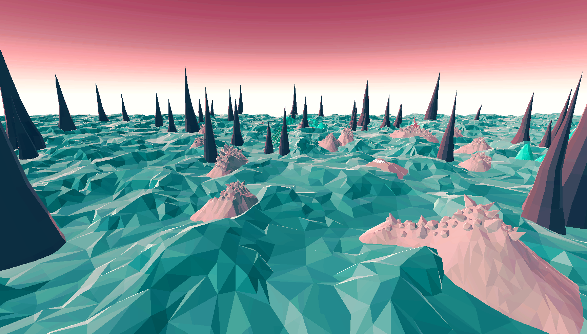
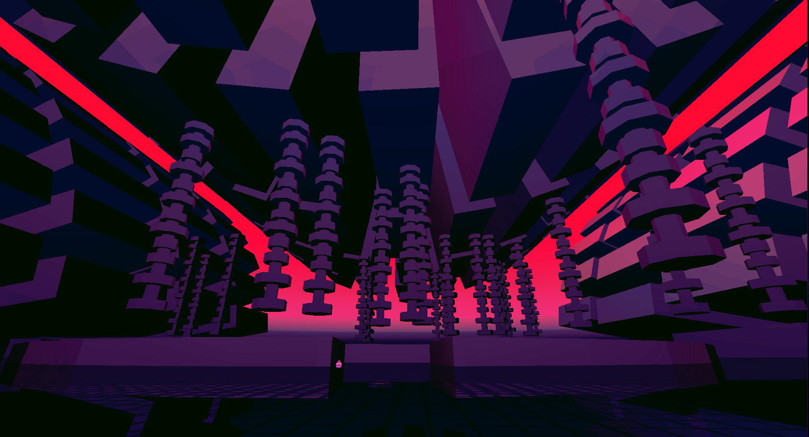

Inside the Void is a game created by, Jacob A. Medina at 3D Methods, is a adventure game that places you, Operative 1286, on a mission to find and discover the disappearances of the lost crews that preceded you. Thrown into a world with unidentified objects and an abstract landscape, your mission is to uncover the mysteries presented before you. After playing through the game a total of 4 times, allow me to share my thoughts and observations in a spoiler free review of Inside the Void.
The gameplay is that of a open world, exploration game centered around a diverse and mysterious planet.
You land on the planet with only little information and through exploration, you uncover messages and
objects that slowly reveal the truth behind the happenings. Immersed in a world of unfamiliar terrain
leads to a curiosity to continue until all is revealed.
The art as mentioned before is abstract and beautiful. With vibrant colors, the landscape is unique and inviting to explore.
The features around the planet invoke curiosity to approach and investigate the interesting structures.
The theming of curiosity is matched perfectly with the world development.

The theme of this game is mystery and adventure. You land on a planet with the information that a crew
came here before you. As you explore you are presented data modules, presumably left there by the previous
crew. Throughout the game you and reading these modules you get closer and closer to uncovering the truth
of the anomalies. The story progresses as you discover "dark" dimensions contained within the anomalies.
These dimensions hold even more mystery than before with odd visuals that seem to defy the normalcy of
the outside planet.

The theming and mysteries create an interconnected web of links between the main character, the world,
the aliens, the past crew and much more.
This game has many amazing qualities, from open world and exploration, to the puzzles unlocked throughout the game, the game presents a great experience for the player.
 Zack Dominick
Zack Dominick